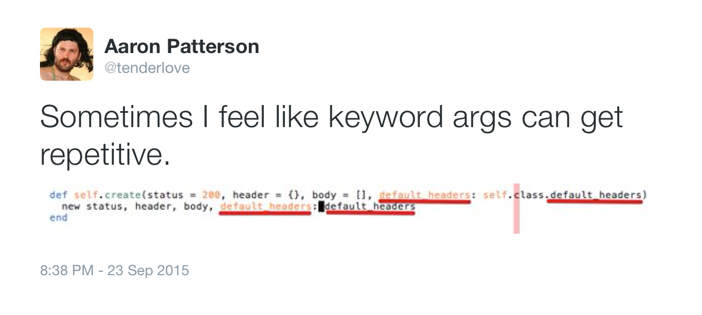

class: center # # # Ruby keyword arguments -- ## and the `options` hash --- # Keyword arguments > a computer language's support for function calls > that clearly state the name of each parameter > within the function call itself ### – https://en.wikipedia.org/wiki/Named_parameter -- ###### ```ruby method(parameter: argument) ``` --- # Keyword vs positional args ```ruby def mysterious_total(subtotal, tax, discount = 0) subtotal + tax - discount end ``` -- ```ruby mysterious_total(37, 10, 5) ``` --- # Keyword vs positional args ```ruby def obvious_total(subtotal:, tax:, discount: 0) subtotal + tax - discount end ``` -- ```ruby obvious_total(subtotal: 37, tax: 10, discount: 5) ``` -- ```ruby obvious_total(discount: 5, subtotal: 37, tax: 10) ``` --- class: list # Connascence * Name * Type * Meaning * Position * Algorithm * Execution * Timing * Values * Identity --- # Keyword vs positional args -- ```ruby (0..9).drop(4).take(3) ``` ```ruby Complex(1, 2) ``` ```ruby Rational(1, 2) ``` -- ```ruby 1 + 2i 1 / 2r ``` --- # `options` hash -- ```ruby def total(subtotal, tax, options = {}) subtotal + tax - (options[:discount] || 0) end ``` ```ruby options = { discount: 5 } total(37, 10, options) ``` -- ```ruby total(37, 10, { discount: 5 }) ``` -- ```ruby total(37, 10, discount: 5) ``` --- # Programming Ruby ## Ruby 1.6 does not have keyword arguments… ### ### People are using hashes as a way of achieving the same effect… ### The use of a hash means that we can simulate keywords… ### Ruby has a short cut… No braces are needed. --- # Programming Ruby ## Ruby 1.6 does not have keyword arguments… .highlight[ ### (although they are scheduled to be implemented in Ruby 1.8)] ### People are using hashes as a way of achieving the same effect… ### The use of a hash means that we can simulate keywords… ### Ruby has a short cut… No braces are needed. --- # `options` hash ```ruby def total(subtotal, options = { tax_rate: 10, discount: 0 }) tax = options[:tax] || options[:tax_rate] * subtotal / 100 subtotal + tax - options[:discount] end ``` ```ruby total(40, discount: 2) ``` -- ```ruby # NoMethodError: undefined method `*' for nil:NilClass ``` --- # `options` hash ```ruby def total(subtotal, options = {}) options = { tax_rate: 10, discount: 0 }.merge(options) # options.reverse_merge(tax_rate: 10, discount: 0) tax = options[:tax] || options[:tax_rate] * subtotal / 100 subtotal + tax - options[:discount] end ``` ```ruby total(40, discount: 2) ``` --- ## `options = {}` ##### #### `rails ((v4.2.4)) $ ag 'def .*opt(ion)?s *= *{}' | wc -l` # 463 -- #### `shopify (master) $ ag 'def .*opt(ion)?s *= *{}' | wc -l` # 899 --- # `options` hash as keyword args ```ruby def total(options = {}) options[:subtotal] + options[:tax] - (options[:discount] || 0) end ``` ```ruby total(subtotal: 37, tax: 10, discount: 5) # => 42 ``` -- ```ruby total(tax: 10, discount: 5) # undefined method `+' for nil:NilClass (NoMethodError) ``` --- # `options` hash as keyword args ```ruby def total(options = {}) subtotal = options.fetch(:subtotal) tax = options.fetch(:tax) discount = options.fetch(:discount, 0) subtotal + tax - discount end ``` -- ```ruby total(subtotal: 37, tax: 10, dsicount: 5) # => 47 ``` --- # `options` hash as keyword args ```ruby require 'active_support/core_ext/hash/keys' def total(options = {}) * options.assert_valid_keys(:subtotal, :tax, :discount) subtotal = options.fetch(:subtotal) tax = options.fetch(:tax) discount = options.fetch(:discount, 0) subtotal + tax - discount end ``` --- # Splat & `options` hash ```ruby require 'active_support/core_ext/array/extract_options' def foo(*args) p args.extract_options! p args end foo(:bar, :baz, options: true) # {:options=>true} # [:bar, :baz] ``` -- ```ruby # Array#extract_options! last.is_a?(::Hash) ? pop : {} ``` -- ```ruby last.is_a?(::Hash) && last.extractable_options? ? pop : {} ``` `Hash#extractable_options?` `ActiveSupport::HashWithIndifferentAccess#extractable_options?` `ActiveSupport::OrderedHash#extractable_options?` --- # Ruby 1.8 ```ruby def total(options = {}) options.assert_valid_keys(:subtotal, :tax, :discount) subtotal = options.fetch(:subtotal) tax = options.fetch(:tax) discount = options.fetch(:discount, 0) subtotal + tax - discount end total(:subtotal => 37, :tax => 10, :discount => 5) ``` --- # Ruby 1.9 hash syntax ```ruby def total(options = {}) options.assert_valid_keys(:subtotal, :tax, :discount) subtotal = options.fetch(:subtotal) tax = options.fetch(:tax) discount = options.fetch(:discount, 0) subtotal + tax - discount end total(subtotal: 37, tax: 10, discount: 5) ``` --- # Ruby 2.0 optional keyword arguments ```ruby def total(discount: 0, **options) subtotal = options.fetch(:subtotal) tax = options.fetch(:tax) subtotal + tax - discount end total(subtotal: 37, tax: 10, discount: 5) ``` --- # Ruby 2.1 required kwarg ```ruby def total(subtotal:, tax:, discount: 0) subtotal + tax - discount end total(subtotal: 37, tax: 10, discount: 5) ``` --- # Original Gotcha -- ```ruby def nothing end ``` -- ```ruby nothing(*[]) ``` --- # Original Gotcha ```ruby def nothing end ``` ```ruby nothing(*[]) # => nil ``` -- ```ruby nothing(**{}) ``` .center.question[ # ?] --- # Original Gotcha ### Ruby 2.0.0 to 2.2.0 ```ruby foo(**{}) # ArgumentError: wrong number of arguments (1 for 0) ``` ### Ruby 2.2.1 ```ruby foo(**{}) # => nil ``` -- ```ruby foo(**Hash.new) # ArgumentError: wrong number of arguments (1 for 0) ``` --- # Python ```python def total(subtotal, tax, discount=0): return subtotal + tax - discount total(37, 10, 5) total(37, 10, discount=5) total(37, 10) total(37, discount=5, tax=10) total(tax=10, subtotal=37) total(discount=5, subtotal=37, tax=10) ``` --- class: list # Method call * `__send__` * name * arguments * block (optional) --- # Array literal syntax ```ruby [1, *[2, 3]] # => [1, 2, 3] ``` -- ```ruby [1, 2, 3, foo: 4] # => [1, 2, 3, {:foo=>4}] ``` --- # Splat & double-splat ```ruby def foo(*args, **options) p options p args end ``` --- # Ruby 2.1 double-splat `**` ```ruby options = { discount: 15 } total(subtotal: 37, tax: 10, discount: 5) # => 42 total(subtotal: 37, tax: 10, **options, discount: 5) # => 42 total(subtotal: 37, tax: 10, discount: 5, **options) # => 42 ``` -- ```ruby { a: 1, b: 1, **{ b: 2, c: 2 }, **{ c: 3, d: 3 }, d: 4 } # { a: 1, b: 1, c: 2, d: 4 } ``` -- ```ruby { c: 3, d: 3 }.merge(b: 2, c: 2).merge(a: 1, b: 1, d: 4) { a: 1, b: 1, d: 4 }.reverse_merge(b: 2, c: 2).reverse_merge(c: 3, d: 3) # => {:c=>2, :d=>4, :b=>1, :a=>1} ``` -- ```ruby left = -> (key, left, right) { left } { a: 1, b: 1 }.merge(b: 2, c: 2, &left).merge(c: 3, d: 3, &left).merge(d: 4) # => {:a=>1, :b=>1, :c=>2, :d=>4} ``` --- # Ruby 2.2 double-splat `**` ```ruby options = { discount: 15 } total(subtotal: 37, tax: 10, discount: 5) # => 42 total(subtotal: 37, tax: 10, **options, discount: 5) # => 42 total(subtotal: 37, tax: 10, discount: 5, **options) # => 32 ``` -- ```ruby { a: 1, b: 1, **{ b: 2, c: 2 }, **{ c: 3, d: 3 }, d: 4 } # { a: 1, b: 2, c: 3, d: 4 } ``` -- ```ruby { a: 1, b: 1 }.merge(b: 2, c: 2).merge(c: 3, d: 3).merge(d: 4) # => {:a=>1, :b=>2, :c=>3, :d=>4} ``` --- # Double-splat `**` — implicit conversion ```ruby object = Object.new { **object } # TypeError: no implicit conversion of Object into Hash ``` -- ```ruby def object.to_hash { a: 1 } end { **object } # => {:a=>1} ``` --- # Hash implicit conversion ```ruby def object.to_hash { 'string' => false } end { 'string' => true }.merge(object) # => {"string"=>false} ``` -- ```ruby def object.to_hash { 'string' => false } end { **object } # TypeError: wrong argument type String (expected Symbol) ``` -- ```ruby total(object) ``` --- # Performance ```ruby def foo(k1:, k2:, k3:, k4:, k5:, k6:) end 10_000_000.times do foo(k1: 1, k2: 2, k3: 3, k4: 4, k5: 5, k6: 6) end ``` -- ```shell $ time ruby -v bench.rb ruby 2.1.2p95 (2014-05-08 revision 45877) [x86_64-darwin13.0] real 0m16.233s ``` -- ```shell $ time ruby -v bench.rb ruby 2.2.3p173 (2015-08-18 revision 51636) [x86_64-darwin14] real 0m1.310s ``` --- # Ruby VM ```ruby puts RubyVM::InstructionSequence.compile(string).disassemble ``` -- ```ruby string = 'def foo() end' puts RubyVM::InstructionSequence.compile(string).disassemble ``` ``` == disasm: <RubyVM::InstructionSequence:<compiled>@<compiled>>========== 0000 trace 1 ( 1) 0002 putspecialobject 1 0004 putspecialobject 2 0006 putobject :foo 0008 putiseq foo 0010 opt_send_simple <callinfo!mid:core#define_method, argc:3, ARGS_SKIP> 0012 leave == disasm: <RubyVM::InstructionSequence:foo@<compiled>>================= 0000 trace 8 ( 1) 0002 putnil 0003 trace 16 ( 1) 0005 leave ``` --- # Ruby 2.1 VM ```ruby total(subtotal: 37, tax: 10, discount: 5) ``` ```bytecode == disasm: <RubyVM::InstructionSequence:<compiled>@<compiled>>========== 0000 trace 1 ( 1) 0002 putself 0003 putspecialobject 1 0005 putobject [:subtotal, 37, :tax, 10, :discount, 5] 0007 opt_send_simple <callinfo!mid:core#hash_from_ary, argc:1, ARGS_SKIP> 0009 opt_send_simple <callinfo!mid:total, argc:1, FCALL|ARGS_SKIP> 0011 leave ``` --- ```ruby def total(subtotal:, tax:, discount: 0) end ``` ```bytecode == disasm: <RubyVM::InstructionSequence:total@<compiled>>=============== local table (size: 5, argc: 0 [opts: 0, rest: -1, post: 0, block: -1, keyword: 3@2] s0) [ 5] subtotal [ 4] tax [ 3] discount [ 2] ? 0000 getlocal_OP__WC__0 2 ( 1) 0002 dup 0003 putobject :subtotal 0005 opt_send_simple <callinfo!mid:key?, argc:1, ARGS_SKIP> 0007 branchunless 16 0009 dup 0010 putobject :subtotal 0012 opt_send_simple <callinfo!mid:delete, argc:1, ARGS_SKIP> 0014 setlocal_OP__WC__0 5 0016 dup 0017 putobject :tax 0019 opt_send_simple <callinfo!mid:key?, argc:1, ARGS_SKIP> 0021 branchunless 30 0023 dup 0024 putobject :tax 0026 opt_send_simple <callinfo!mid:delete, argc:1, ARGS_SKIP> 0028 setlocal_OP__WC__0 4 0030 dup 0031 putobject :discount 0033 opt_send_simple <callinfo!mid:key?, argc:1, ARGS_SKIP> 0035 branchunless 46 0037 dup 0038 putobject :discount 0040 opt_send_simple <callinfo!mid:delete, argc:1, ARGS_SKIP> 0042 setlocal_OP__WC__0 3 0044 jump 49 0046 putobject_OP_INT2FIX_O_0_C_ 0047 setlocal_OP__WC__0 3 0049 pop 0050 trace 8 0052 putnil 0053 trace 16 ( 2) 0055 leave ( 1) ``` --- # Ruby 2.2 VM ```ruby total(subtotal: 37, tax: 10, discount: 5) ``` ```bytecode == disasm: <RubyVM::InstructionSequence:<compiled>@<compiled>>========== 0000 trace 1 ( 1) 0002 putself 0003 putobject 37 0005 putobject 10 0007 putobject 5 0009 opt_send_without_block <callinfo!mid:total, argc:3, kw:3, FCALL> 0011 leave ``` ```ruby def total(subtotal:, tax:, discount: 0) end ``` ```bytecode == disasm: <RubyVM::InstructionSequence:total@<compiled>>=============== local table (size: 5, argc: 0 [opts: 0, rest: -1, post: 0, block: -1, kw: 3@2, kwrest: -1]) [ 5] subtotal [ 4] tax [ 3] discount [ 2] ? 0000 trace 8 ( 1) 0002 putnil 0003 trace 16 ( 2) 0005 leave ``` --- # Ruby 2.2 hash syntax ```ruby { :foo => 42 } { foo: 42 } ``` ```ruby { :"foo-bar" => 42 } { "foo-bar": 42 } ``` -- ```js { "string": "a string", "number": 42, "object": { "an": "object" }, "array": [], "true": true, "false": false, "null": null } ``` -- ```ruby null = nil ``` --- # Repetition  --- # Gotchas ```ruby class Dispatcher def nothing end def some(thing:) end def dispatch(name, **kwargs) public_send(name, **kwargs) end end ``` -- ```ruby class Dispatcher def dispatch(name, **kwargs) args = [name] args << kwargs unless kwargs.empty? public_send(*args) end end ``` --- # Thanks! ### Étienne Barrié #### @bihi #### Shopify ## Questions? #### <hr /> * https://robots.thoughtbot.com/ruby-2-keyword-arguments * https://redmine.ruby-lang.org/issues/10719 * https://redmine.ruby-lang.org/issues/10856